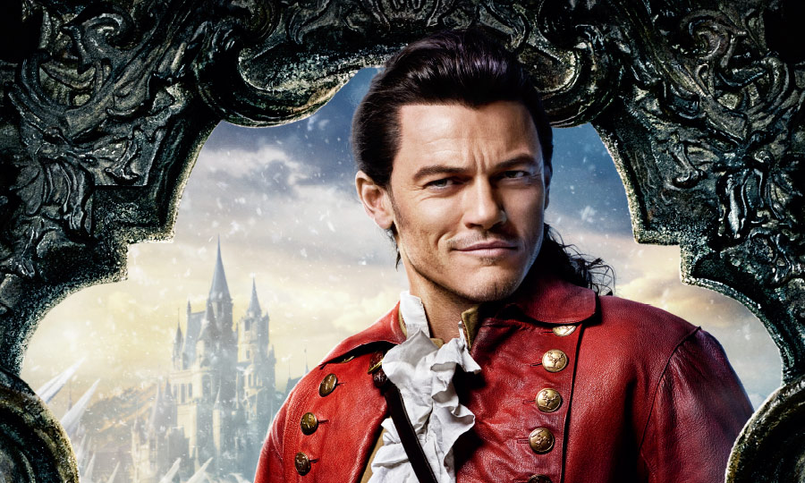

cast/cv
CAST

エマ・ワトソン
ベル
パリで生まれ、イギリス・オックスフォードで育つ。10歳のとき、映画『ハリー・ポッターと賢者の石』でスクリーンデビュー。シリーズ全8作でハーマイオニー役を務め、一躍人気者に 。その他の代表作に、『ウォールフラワー』、『ブリングリング』など。国連の組織《UN Women》の親善大使を務めている。

ダン・スティーヴンス
野獣・王子
ロンドン出身。ケンブリッジ大学在学中から学生劇に出演し、ピーター・ホール演出の舞台「お気に召すまま」でキャリアをスタート。メインキャストを務めたTVシリーズ「ダウントン・ アビー」シーズン1?3で注目された他、映画『ザ・ゲスト』、『ナイト ミュージアム／エジプト王の秘密』などに出演。
ルーク・エヴァンス
ガストン
イギリス・ウェールズ出身。ミュージカル「レント」「ミス・サイゴン」などのロンドン公演でキャリアを積んだのち、映画『タイタンの戦い』でハリウッド進出。以来、『ワイルド・ス ピード EURO MISSION』、『ホビット 竜に奪われた王国』など数多くの作品に出演している。

ジョシュ・ギャッド
ル・フウ
フロリダ出身。2011年にブロードウェイ・ミュージカル「ブック・オブ・モルモン」で、トニー賞主演男優賞ノミネート。おもな出演作に、TVドラマ「大統領とバカ息子」、 映画『スティーブ・ジョブズ』、『ピクセル』などがある。『アナと雪の女王』ではオラフ役を務め、その歌声で世界を魅了した。

ケヴィン・クライン
モーリス
アメリカ・セントルイス出身。ジュリアード音楽院で演技を学び、舞台俳優としてキャリアをスタート。2度のトニー賞受賞歴がある他、映画『ワンダとダイヤと優しい奴ら』ではアカデ ミー助演男優賞に輝いた。その他の代表作に、『ソフィーの選択』、『イン&アウト』、『五線譜のラブレター』など。
ユアン・マクレガー
ルミエール
スコットランド出身。名門ギルドホール音楽演劇学校で演技を学び、ダニー・ボイル監督の映画『トレインスポッティング』で大ブレイク。『スター・ウォーズ』エピソード1?3では、オ ビ＝ワン・ケノービ役に抜擢された。その他の代表作に、『ムーラン・ルージュ』、『ビッグ・フィッシュ』など。
イアン・マッケラン
コグスワース
イギリス・バーンリー出身。60年代から舞台・映画・TVで活躍し、ローレンス・オリヴィエ賞やトニー賞など、数多くの栄誉に輝く。1990年にはナイト爵を授与された。 『X-MEN』シリーズのマグニートー役や、『ロード・オブ・ザ・リング』三部作および『ホビット』三部作のガンダルフ役でもおなじみ。
エマ・トンプソン
ポット夫人
ロンドン出身。アカデミー賞にノミネートされること5回、うち『ハワーズ・エンド』で主演女優賞に、『いつか晴れた日に』では脚色賞に輝いた映画界きっての才媛。 その他の代表作に、『日の名残り』、『ハリー・ポッター』シリーズ3・5・8作目、『ウォルト・ディズニーの約束』など。
ググ・バサ＝ロー
プリュメット
イギリス・オックスフォード出身。名門として知られるロンドンの王立演劇学校で学ぶ。舞台で高い評価を受けたのち、J・J・エイブラムス製作のTVドラマ『アンダーカバー』で主役に抜 擢。TVドラマ「TOUCH／タッチ」シーズン1、映画『幸せの教室』、『ベル ある伯爵令嬢の恋』などにも出演している。
オードラ・マクドナルド
マダム・ド・ガルドローブ
ベルリンで生まれ、アメリカ・フレズノで育つ。ジュリアード音楽院で声楽を学び、おもにブロードウェイで活躍中。 「ポーギーとベス」「レディ・デイ・アット・エマーソンズ・バー&グリル」などに出演し、トニー賞の演技部門では史上最多の6回の受賞歴を誇る。歌手としても活動し、これまで に5枚のソロアルバムをリリース。
CV
昆 夏美
ベル
東京都出身。ミュージカル「ロミオ＆ジュリエット」のジュリエット役「ハムレット」のオフィーリ ア役「レ・ミゼラブル」のエポニーヌ「ミス・サイゴン」のキム。ミュージカル界の枠を超えた新世 代の歌姫と呼ばれている。

山崎 育三郎
野獣
東京都出身。「レ・ミゼラブル」のマリウス役に抜擢されて以来、「ロミオ&ジュリエット」「モ ーツァルト！」「ミス・サイゴン」「プリシラ」などのミュージカル「下町ロケット」カヴァーアル バム「1936～your songs～」月9ドラマ「突然ですが、明日結婚します」に出演。

岩崎 宏美
ポット夫人
東京都出身。「二重唱（デュエット）」でデビュー以来、「ロマンス」「すみれ色の涙」「聖母たち のララバイ」などのヒット曲をもちデビュー40周年に初のニューヨーク公演を行う。ミ ュージカル「レ・ミゼラブル」の日本初演でファンティーヌ役。
村井 國夫
モーリス
佐賀県出身。「レ・ミゼラブル」のジャベール役を務めた他、「マイ・フェア・レディ」「ミー＆マ イガール」「エリザベート」「ベガーズオペラ」などの舞台に出演。TVでは、NHK大河ドラマや時代 劇、刑事ドラマなどで人気を博している。また声優としても活躍中。

吉原 光夫
ガストン
東京都出身。「ライオンキング」「美女と野獣」など数々の人気作に出演し、09年《Artist Company 響人》を立ち上げて活動している。帝国劇場開場100周年記念公演「レ・ミゼラブル」 では、32歳でジャン・バルジャン役を演じた。

藤井 隆
ル・フウ
大阪府出身。様々なバラエティ番組に出演し人気を博し、「ナンダカンダ」で歌手デビューし、同年 には紅白歌合戦に出場するなど、芸人、歌手、俳優としてマルチな才能を発揮。おもな 出演作に、映画『模倣犯』、舞台「酒と涙とジキルとハイド」、TVドラマ「真田丸」「逃げるは 恥だが役に立つ」など。
成河(そんは)
ルミエール
東京都出身。「エンジェルス・イン・アメリカ」のエンジェル役に抜擢されて以来、舞台を中心に活 躍している。主演を務めた主な舞台に、「グランドホテル」「100万回生きたねこ」「 アドルフに告ぐ」「ショーシャンクの空に」などがある他、NHK連続テレビ小説「マッサン」で 連続ドラマ初レギュラー出演を果たした。
小倉 久寛
コグスワース
三重県出身。劇団本公演、毎年6月の新橋演舞場公演「熱海五郎一座」のレギュラーの舞台の他、客演 でミュージカルにも出演。映画、ドラマ、バラエティ、声優、ナレーターとして活躍 中。声優としては、「天才バカボン」、海外ドラマ「サブリナ」など。
濱田 めぐみ
マダム・ド・ガルドローブ
福岡県出身。「美女と野獣」のベル役に抜擢され劇団四季デビュー。さらに「ライオンキング」「ア イーダ」「ウィキッド」の3作品でヒロインを演じた。その後も数多くの舞台で活躍し つつ、2枚のソロアルバムをリリース。

島田 歌穂
プリュメット
「レ･ミゼラブル」で脚光を浴び、出演回数は1,000回を超えた。同作の世界ベストキャストに選ばれ 、英国王室主催の御前コンサートに出演。主な出演作品は「ウエストサイド・ストーリ ー」「三文オペラ」など多数。芸術選奨文部大臣新人賞、紀伊國屋演劇賞個人賞など受賞多数。 大阪芸術大学教授。